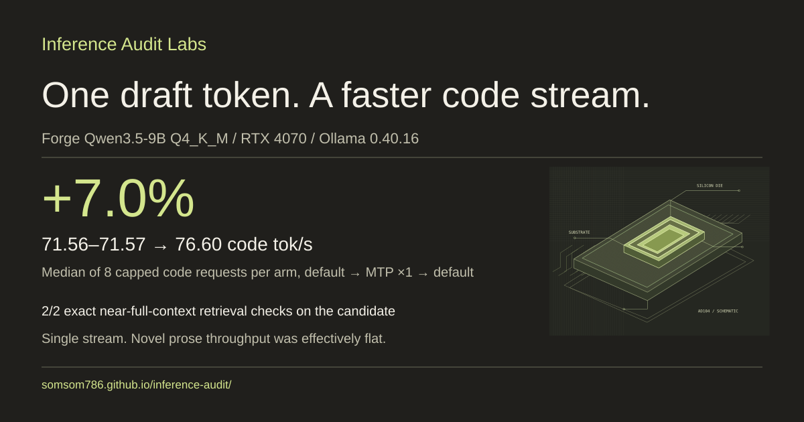

Structured Python
+23.5%
89.9 vs 72.8 tok/s against the faster control; median e2e fell from 2.82–3.19 s to 2.34 s.
RTX 4070 experiment · Native MTP
Native multi-token prediction proposes tokens ahead of the main model. On Forge Qwen3.5-9B, checking one proposal at a time accelerated single-stream code—while asking for 2–4 proposals slowed it down, and concurrency=2 erased the gain.
Measured by Inference Audit Labs
Forge Qwen3.5-9B Q4_K_M · Ollama 0.40.16 CUDA
19/19 byte-for-byte identical greedy outputs at k=1 · Novel prose flat · k=2, 3, 4 progressively slower.
Initial repeated brackets
Default → one-token MTP → default on Forge Qwen3.5-9B Q4_K_M, RTX 4070, and Ollama 0.40.16. Each arm measured eight code and eight novel-prose prompts, 128 output tokens per request, one stream, and an 8,192-token context. Comparisons use the faster of the two neighboring controls.
Code decode rose from 71.56–71.57 to 76.60 tok/s (+7.0%). Median code completion fell from 1.858–1.865 s to 1.748 s. An earlier matched bracket reached +6.9%. All eight visible code outputs matched both controls in each one-token bracket, and both near-full retrieval checks passed.
Prose throughput stayed flat, while four draft tokens dropped code decode to 55.91 tok/s (−22%) and prose to 50.94 tok/s (−29%). Peak board memory in the fresh one-token arm was 8,935 MiB against 8,475–8,499 MiB.
Measured by Inference Audit Labs
A follow-up sweep ran A1 (k=0) → k=1 → k=2 → k=3 → A2 (k=0) on the same card, followed by a two-slot concurrency bracket (OLLAMA_NUM_PARALLEL=2). k=1 was the clear single-stream optimum across every panel.
Structured Python
+23.5%
89.9 vs 72.8 tok/s against the faster control; median e2e fell from 2.82–3.19 s to 2.34 s.
4K-context code
+16.5%
78.6 vs 67.5 tok/s at 4,098 prompt tokens; verify overhead did not erase the gain.
Byte-for-byte matches
19/19
Greedy outputs matched defaults on all 19 prompts; executable unit tests were identical (2/4).
k=1 did not beat the faster interleaved default control (115.87 vs 111.14–121.88 pooled code tok/s), and peak board VRAM rose by +522 MiB (8,719 → 9,241 MiB). Do not enable it for multi-user serving without testing. In this sweep the plain code panel gained only +3.8% because the two controls differed by 7%, so the headline +7.0% single-stream claim rests on the cleaner repeat bracket.